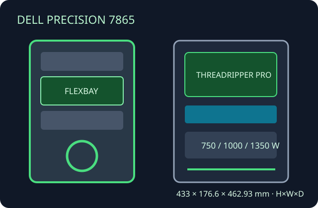

[ THREADRIPPER PRO TOWER // PRECISION 7865 ]
Dell Precision 7865 Tower
AMD Threadripper Pro workstation enclosure; service-tag and configuration determine the correct board, power, storage and thermal parts.

Specifications & fit
| Model / revision | Dell Precision 7865 Tower; distinguish from Precision 7875, a separate newer workstation model. |
|---|---|
| Board form factor | Dell proprietary Threadripper Pro system board and mounting; standard ATX/E-ATX fit is not specified. |
| Dimensions | 433 × 176.6 × 462.93 mm (H × W × D), published dimensions; verify projections and feet for rack/shipping fit. |
| PSU | Dell OEM 750 W, 1000 W and 1350 W options are configuration-dependent. Select graphics only against the installed PSU, cabling and service-tag bill of materials. |
| GPU / cooler / radiator fit | Dell-qualified professional GPU cards and riser combinations are specified by configuration; no single retail-card length envelope applies across drive options. Use the CPU heatsink/fan and GPU cooling assemblies listed for the SKU; aftermarket radiator clearance is not published. |
| Drive bays | Configurable FlexBay supports combinations of 3.5-inch/2.5-inch SATA/SAS or NVMe devices; carrier/backplane options determine actual count and lane wiring. |
| Airflow | OEM fan, duct and processor/GPU thermal assemblies establish front-to-rear airflow; retain shrouds and cover all unused openings as Dell specifies. |
| Serviceability / compatibility | Dell service guide documents component removal and FlexBay variants. Match board, PSU, storage backplane, GPU riser and cooler to service tag; not a standard ATX conversion shell. |
Manufacturer sources
- Dell — Precision 7865 Tower Setup and SpecificationsDimensions and configuration-dependent system specifications.
- Dell — Precision 7865 Tower Service ManualOfficial service information and supported system setup options.
- Dell Support — Precision 7865 documentationManuals and revision information for this model family.